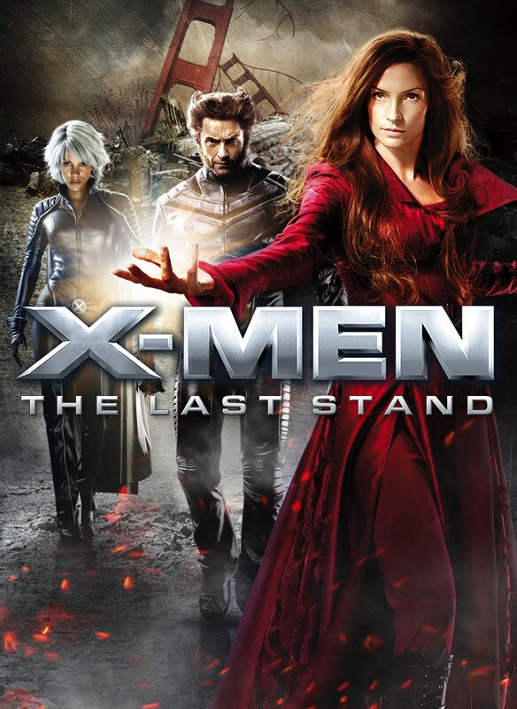
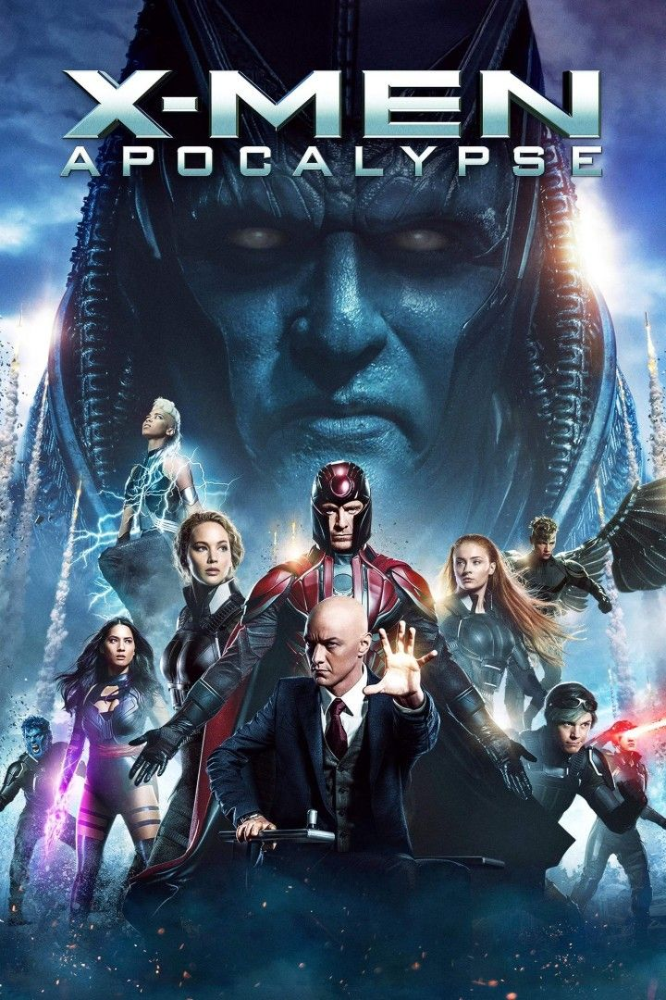
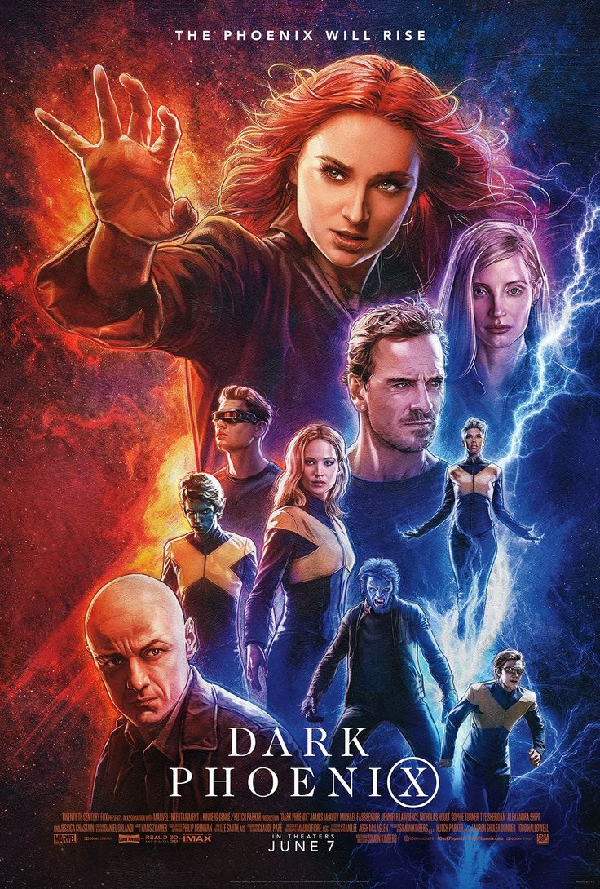

Portrayed by: Famke Janssen
Review:
› In this film, Jean Grey’s struggle with her inner Phoenix power takes center stage. It shows how dangerous uncontrollable power can be — but also how deeply human Jean remains.

Portrayed by: Sophie Turner
Review:
› We see a younger Jean discovering her abilities and finding her place in the X-Men. The movie hints at her connection to the Phoenix Force.

Portrayed by: Sophie Turner
Review:
› This movie dives into Jean’s emotional conflict and the danger of her cosmic power. It shows both her strength and vulnerability as she tries to control the Phoenix within.